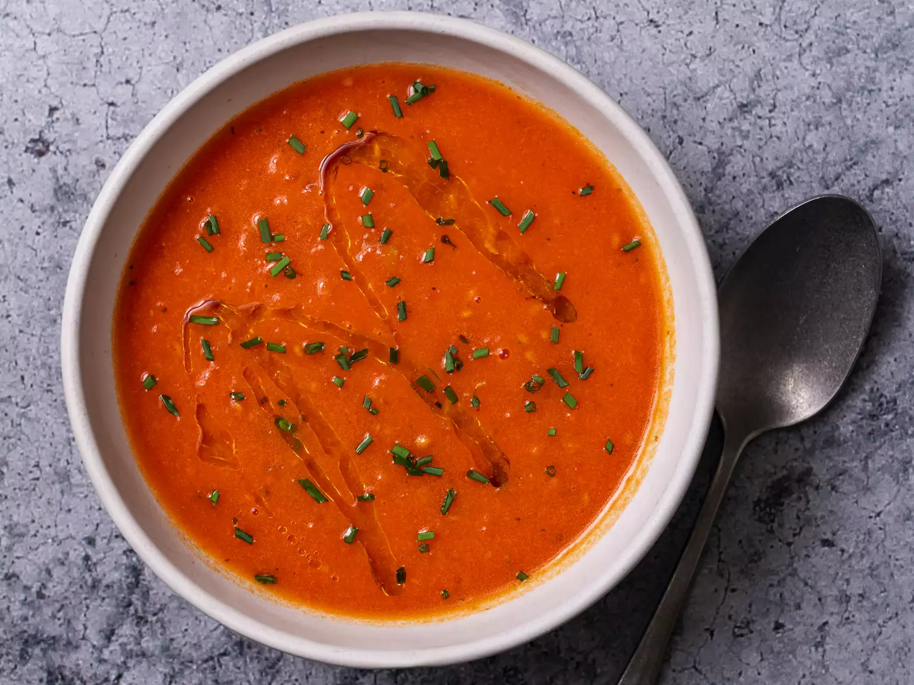

Tomato Soup

This soup is very tasty and is great for staying warm in the cold
Ingredients
- 3 tablespoons unsalted butter
- 1 large onion, finely diced
- Pinch of red pepper flakes
- Half teaspoon of dried oregano
- 1 tablespoon all purpose flour
- Two 28-ounce cans whole tomatoes with their juice
- Half cup whole milk or heavy cream
- Kosher salt and freshly ground black pepper
- 2 tablespoons whisky, vodka or brandy (optional)
- 2 tablespoons chopped fresh herbs
Steps
- Melt the butter in a medium saucepan over medium-high heat. Add the onions and cook, stirring frequently, until softened but not browned, 6 to 8 minutes.
- Add the pepper flakes and oregano and cook, stirring until fragrant, about 30 seconds.
- Add the flour and cook, stirring, for 30 seconds.
- Add the tomatoes, with their juice, and stir, scraping the flour up off the bottom of the pan.
- Add the milk or cream and cook, stirring occasionally and breaking up the tomatoes with a spoon until the whole thing comes to a boil. Reduce to a simmer and cook for 3 minutes.
- Remove the soup from the heat and puree using an immersion blender or transfer to a standing blender and puree.
- Season the soup to taste with salt and pepper. Stir in the whiskey. Serve immediately. Top with a generous drizzle of olive oil.